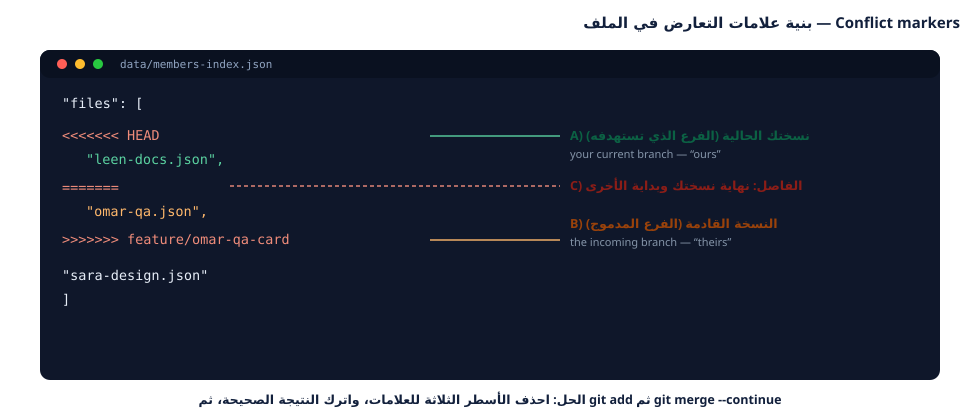

كل ما تعلّمته حتى الآن كان تمهيداً لهذه الورقة. اليوم ستصنع تعارضاً عن قصد لتتعلم
كيف يُحلّ بأمان، ثم تعالج التفاف التاريخ بـ rebase، ثم تنشر موقع الفريق على الإنترنت
عبر GitHub Pages، وأخيراً تكتب تقريراً نهائياً عن المشروع وعن نفسك.
Everything so far was preparation. Today you deliberately create a conflict and resolve it, handle rebasing, publish the team site with GitHub Pages, and write your final project report.
<<<<<<< ======= >>>>>>>) وتفسيرها بدقة.git rebase وفهم الفرق بين معنى HEAD في merge وrebase.--force-with-lease بعد إعادة التشكيل.التعارض ليس خطأً وليس فشلاً، بل رسالة من Git تقول: «تعديلان مختلفان على نفس المكان، ولا أستطيع أن أقرّر عنكما». القرار قرار بشري — وأنت مؤهّل لاتخاذه الآن.

| الحالة | هل يحدث تعارض؟ | السبب |
|---|---|---|
| طالبان يضيفان بطاقتين في ملفين مختلفين | ✘ لا | Git يدمج ملفين مستقلين تلقائياً |
| طالبان يعدّلان نفس السطر | ✔ نعم | تعديلان على نفس المكان بالضبط |
| طالبان يعدّلان ملفاً مُولَّداً (الفهرس) | ✔ نعم (مقصود) | الملف يتغير من الجهتين معاً |
| طالبان يعدّلان سطرين متباعدين في ملف واحد | ✘ لا | Git يدمج المقاطع بلا تداخل |
| طالب حذف ملفاً وآخر عدّله | ✔ نعم | تعارض حذف مقابل تعديل |
الهدف: تجربة تعارض حقيقي في ملف واحد بسيط: شعار الفريق.
التحضير — الطالب (أ) يعدّل الشعار:
$ git switch main && git pull --ff-only $ git switch -c docs/sara-slogan $ nano sandbox/team-slogan.txt # أضف اسمك في نهاية السطر # الناتج: شعار الفريق: «نتعلّم معاً، ونرفع معاً» — أعضاء الفريق: سارة $ git commit -am "docs(slogan): add sara to the team slogan" $ git push -u origin docs/sara-slogan
الطالب (ب) يعدّل نفس الملف — قبل أن يصل تعديل (أ):
$ git switch main && git pull --ff-only $ git switch -c docs/omar-slogan $ nano sandbox/team-slogan.txt # الناتج: شعار الفريق: «نتعلّم معاً، ونرفع معاً» — أعضاء الفريق: عمر $ git commit -am "docs(slogan): add omar to the team slogan" $ git push -u origin docs/omar-slogan $ git switch main
الآن دمج سارة أولاً (يمرّ بسلام)، ثم دمج عمر (سيحدث التعارض):
$ git merge --no-ff docs/sara-slogan -m "Merge pull request #21 from sara/slogan" Merge made by the 'ort' strategy. sandbox/team-slogan.txt | 2 +- 1 file changed, 1 insertion(+), 1 deletion(-) $ git merge --no-ff docs/omar-slogan -m "Merge pull request #22 from omar/slogan" Auto-merging sandbox/team-slogan.txt CONFLICT (content): Merge conflict in sandbox/team-slogan.txt Automatic merge failed; fix conflicts and then commit the result. $ git status -sb ## main UU sandbox/team-slogan.txt
افتح الملف واقرأ علامات التعارض:
<<<<<<< HEAD شعار الفريق: «نتعلّم معاً، ونرفع معاً» — أعضاء الفريق: سارة ======= شعار الفريق: «نتعلّم معاً، ونرفع معاً» — أعضاء الفريق: عمر >>>>>>> docs/omar-slogan
الحل الصحيح — نُبقي المعلومتين معاً:
# احذف الأسطر الثلاثة للعلامات واكتب السطر النهائي: $ nano sandbox/team-slogan.txt # الناتج: شعار الفريق: «نتعلّم معاً، ونرفع معاً» — أعضاء الفريق: سارة، عمر $ git add sandbox/team-slogan.txt $ git commit --no-edit [main d34a3f6] Merge pull request #22 from omar/slogan $ git diff --check # لا مخارج = لا علامات تعارض باقية $ git log --oneline -3 d34a3f6 (HEAD -> main) Merge pull request #22 from omar/slogan 85972ba Merge pull request #21 from sara/slogan abfa9da docs(slogan): add sara to the team slogan
<<<<<<< HEAD جزءاً من المشروع! افحص دائماً بـ
git diff --check أو ابحث يدوياً: grep -rn "<<<<<<<" .git add فالملف يبقى «غير محلول» ولا يقبل Git الإكمال.<<<<<<< HEAD
git diff --check (يجب ألا تظهر مخرجات): ……………………………git status -sb: …………الهدف: أشهر تعارض سيقع فعلاً في مشروعنا: data/members-index.json.
$ git switch main && git pull --ff-only $ git switch -c feature/omar-qa-card $ cp data/members/00-template.json data/members/omar-qa.json # … املأ البطاقة ثم: $ node tools/build-index.mjs $ git add -A && git commit -m "feat(members): add card for omar-qa" $ git push -u origin feature/omar-qa-card # في هذه الأثناء دمج المدرّب بطاقة لينا على main — فمزامنة فرعك: $ git fetch origin $ git rebase origin/main Rebasing (1/1) Auto-merging data/members-bundle.js CONFLICT (content): Merge conflict in data/members-bundle.js Auto-merging data/members-index.json CONFLICT (content): Merge conflict in data/members-index.json error: could not apply 1af7c9b... feat(members): add card for omar-qa hint: Resolve all conflicts manually, mark them as resolved with hint: "git add/rm <conflicted_files>", then run "git rebase --continue".
افحص الملف المتعارض:
{ "_generated": true, "total": 4, "files": [ "01-example-student.json", "99-you-instructor.json", <<<<<<< HEAD "leen-docs.json", ======= "omar-qa.json", >>>>>>> 1af7c9b (feat(members): add card for omar-qa) "sara-design.json" ] }
الملف مُولَّد آلياً من ملفات data/members/. لو حللت التعارض يدوياً سينكسر الفهرس عند
أول إضافة جديدة. الحل الاحترافي: أعد التوليد.
$ node tools/build-index.mjs [build-index] ✔ تم توليد الفهرس: 5 بطاقة. • example-student مطوّر • leen-docs كاتب توثيق • omar-qa مختبر QA • sara-design مصمّم • you-instructor قائد فريق $ git add data/members-index.json data/members-bundle.js $ git rebase --continue [detached HEAD 9a8b7c6] feat(members): add card for omar-qa 3 files changed, 25 insertions(+), 2 deletions(-) Successfully rebased and updated refs/heads/feature/omar-qa-card. $ git status -sb ## feature/omar-qa-card...origin/feature/omar-qa-card [ahead 1, behind 3]
الفرع المحلي صار ahead 1, behind 3 — أي أن تاريخه أُعيد كتابته. الدفع العادي سيُرفض،
نحتاج --force-with-lease (انظر المهمة 3).
data/members-index.json (العلامات والملف):<<<<<<< HEAD
node tools/build-index.mjs:$ node tools/build-index.mjs
git status -sb: ……………………………………………………git push --force يمحو كل ما على الفرع البعيد ويستبدله بتاريخك بلا أي سؤال — فإن كان
زميلك قد رفع التزاماً على نفس الفرع، سيُفقد عمله. أما --force-with-lease فيقول للخادم:
«استبدل التاريخ فقط إن كان لا يزال على الحالة التي أعرفها»، فيرفض العملية إن تغيّر
شيء، فتنقذ عمل زميلك.
--force overwrites the remote branch with no questions asked — possibly destroying a
teammate's commits. --force-with-lease only overwrites if the remote is still exactly as you
last saw it, refusing otherwise. Always use the lease version, and only on your own branch.
$ git push To https://github.com/school-git-workshop/class-team-hub.git ! [rejected] feature/omar-qa-card -> feature/omar-qa-card (non-fast-forward) error: failed to push some refs to 'https://github.com/school-git-workshop/class-team-hub.git' hint: Updates were rejected because the tip of your current branch is behind hint: its remote counterpart. Integrate the remote changes (e.g. hint: 'git pull ...') before pushing again. $ git push --force-with-lease origin feature/omar-qa-card To https://github.com/school-git-workshop/class-team-hub.git + 1af7c9b...9a8b7c6 feature/omar-qa-card -> feature/omar-qa-card (forced update)
أوضاع التاريخ التي ستراها كثيراً:
الحالة في git status -sb |
المعنى | الأمر السليم |
|---|---|---|
ahead 2 |
عندك التزامان غير مرفوعين | git push |
behind 3 |
عند الزملاء 3 التزامات لم تجلبها | git pull --ff-only |
ahead 1, behind 3 |
التاريخان افترقا | git pull --rebase |
diverged |
افتراق ثم محاولة دفع | pull --rebase ثم push --force-with-lease |
الدفع على الفرع الشخصي فقط، ومع fetch أولاً، وبـ --force-with-lease فقط.
--force المجرد ≠ مسموح في أي حالة.
git push --force-with-lease:$ git push --force-with-lease origin feature/omar-qa-card
--force-with-lease عمل زميلك تحديداً؟……………………………………………………………………………………………………………………
الهدف: أن تتحقق من فرعك بنفسك قبل أن يتحقق منه غيرك — وهذا أسرع طريق للقبول.
$ node tests/validate-members.mjs --- النتيجة / Result: 7 بطاقة، 0 خطأ، 0 تحذير --- $ git fetch origin && git diff --stat origin/main...HEAD data/members-bundle.js | 13 +++++++++++++ data/members-index.json | 5 +++-- data/members/omar-qa.json | 9 +++++++++ 3 files changed, 26 insertions(+), 1 deletion(-) $ git log --oneline origin/main..HEAD 9a8b7c6 feat(members): add card for omar-qa $ git diff origin/main...HEAD -- data/members/omar-qa.json +{ + "fullName": "عمر القاسم", + "github": "omar-qa", + "role": "مختبر QA", + … +}
origin/main...HEAD تعني: «التعديلات التي على فرعي فقط مقارنةً بالفرع المشترك» — وهذا
بالضبط ما يعرضه GitHub في تبويب Files changed داخل طلب السحب.
قائمة الفحص قبل أن تطلب مراجعة (افحصها دائماً):
| # | الفحص | الأمر | النتيجة المطلوبة |
|---|---|---|---|
| 1 | الاختبارات | node tests/validate-members.mjs |
0 خطأ |
| 2 | لا علامات تعارض | git diff --check |
لا مخرجات |
| 3 | ما سيدخل فعلاً | git diff --stat origin/main...HEAD |
ملفاتك فقط |
| 4 | رسالة الالتزام | git log --oneline origin/main..HEAD |
صيغة صحيحة |
| 5 | فرع محدَّث | git status -sb |
لا behind |
| 6 | لا أسرار | git diff origin/main...HEAD | grep -iE "token|password" |
لا نتائج |
نفّذ الفحوص الستة على فرعك واملأ النتيجة:
| # | الفحص | النتيجة التي حصلت عليها |
|---|---|---|
| 1 | node tests/validate-members.mjs |
……………………… |
| 2 | git diff --check |
……………………… |
| 3 | ملفات في git diff --stat |
……………………… |
| 4 | آخر رسالة التزام | ……………………… |
| 5 | git status -sb |
……………………… |
| 6 | البحث عن أسرار | ……………………… |
الهدف: أن يرى العالم — وذووك — مشروع الفريق على رابط حقيقي.
النشر على GitHub Pages يعني أن GitHub سيتولّى استضافة ملفات المشروع من فرع محدَّد
(غالباً main) ويعطينا رابطاً عاماً. المشروع جاهز للنشر لأنه موقع ثابت بلا أي خادم
أو قاعدة بيانات.
GitHub Pages hosts your static files straight from a branch and gives you a public URL. Our project is ready because it is a pure static site — no server, no database.
الخطوة 1 — من صفحة المستودع:
Settings ← Pages ← Source: Deploy from a branch
Branch: main Folder: / (root) ثم اضغط Save
الخطوة 2 — انتظر دقيقة، ثم افتح الرابط:
https://<org>.github.io/class-team-hub/ مثال: https://school-git-workshop.github.io/class-team-hub/
الخطوة 3 — إن لم تظهر البطاقات، افحص هذا الترتيب:
| العرض | السبب | الحل |
|---|---|---|
| صفحة 404 | النشر لم يكتمل بعد | انتظر 1–3 دقائق ثم أعد التحميل بقوة (Ctrl+Shift+R) |
| الصفحة تعمل بلا بطاقات | data/members-index.json غير محدَّث |
node tools/build-index.mjs ثم التزم وارفع |
| الصفحة فارغة تماماً | فحص المسارات في js/app.js |
تأكد أن الأسماء data/... بحروف صغيرة بالضبط |
| تظهر بطاقة واحدة فقط | خطأ في JSON لدى أحد الزملاء | شغّل الفحص: node tests/validate-members.mjs |
أضف ملف docs/index.md أو شرائح عرض صغيرة عن المشروع، واربط الرابط في ملف README.md:
➜ الموقع المباشر: https://… — هكذا يرى الزائر النتيجة فوراً.
https://…………………………………الهدف: إغلاق المشروع باحتراف: طلب سحب نظيف، وتقرير يوثّق العمل وفريقك.
الجزء أ — طلب سحب نهائي محترف. أنشئ تعديلاً جديداً يحسّن المشروع (مثال: تحديث
README.md بإضافة رابط الموقع المباشر + قسم «كيف تشغّل المشروع»)، ثم:
$ git switch main && git pull --ff-only $ git switch -c docs/<username>-final-readme # عدّل README.md، ثم: $ node tools/build-index.mjs $ node tests/validate-members.mjs $ git add README.md && git commit -m "docs(readme): add live site link and run instructions" $ git push -u origin docs/<username>-final-readme
وعلى GitHub افتح طلب سحب واملأه بهذا الشكل:
العنوان: docs(readme): add live site link and run instructions
المشكلة: Closes #34
ماذا تغيّر: أضفت رابط الموقع المنشور، وقسم تشغيل المشروع خطوة بخطوة.
كيف جُرّب: نفّذت node tests/validate-members.mjs ← النتيجة 0 خطأ، وفتحت الموقع عبر Live Server.
لقطات/أدلة: (الصق المخرجات أو صورة)
الجزء ب — تقرير المشروع النهائي (املأ الجدول):
| المؤشر | القيمة / التفصيل |
|---|---|
| اسم الموقع المنشور | ………………………………… |
| عدد بطاقات الفريق النهائي | ………… |
عدد الالتزامات في main |
………… |
| عدد طلبات السحب المدموجة | ………… |
| أكبر تعارض واجهته وحلّه | ………………………………… |
| الأمر الذي أستخدمه كل يوم | ………………………………… |
| فرع واحد لم أنجح في دمجه (إن وُجد) | ………………………………… |
| تقييمي لجودة تاريخ المشروع (1–5) | ………… |
تكون قد أتممت البرنامج عندما تتحقق هذه الشروط مجتمعة:
1. بطاقتك ظاهرة على الموقع المنشور لا على جهازك فقط.
2. main عندك متساوٍ مع origin/main وبلا علامات تعارض.
3. node tests/validate-members.mjs يخرج بـ 0 خطأ.
4. لديك 3 طلبات سحب على الأقل: واحد لك، وواحد راجعته، وواحد أُغلق بالمراجعة.
5. لديك دليل موثّق على حل تعارضين مختلفين (سطر واحد + ملف مُولَّد).
س1. اشرح بالعربية: لماذا يحدث التعارض عند تعديل نفس السطر، ولا يحدث عند تعديل أسطر متباعدة؟
س2. ما الفرق في معنى HEAD داخل تعارض merge مقارنةً بتعارض rebase؟ ولماذا يخطئ الطلاب هنا؟
س3. لو كان data/members-index.json غير مُولَّد آلياً، فماذا كان سيحدث للفريق؟ اشرح بمثال.
س4. اقترح على فريقك تعديلاً واحداً على سير العمل يقلّل التعارضات في المشروع القادم.
rebase ودفعت بـ --force-with-lease بلا أخطاء| البند | القيمة |
|---|---|
| الاسم واسم المستخدم | ………………………………… |
| رابط المستودع المشترك | https://github.com/……………………/class-team-hub |
| رابط الموقع المنشور | https://………………………………… |
| رقم طلب السحب الأخير | #……… |
| عدد ساعات عملي في البرنامج | ………… |
| المستوى الذي أراه لنفسي اليوم | ☐ مبتدئ ☐ قادر على العمل في فريق ☐ قائد فريق |
أتممت البرنامج التدريبي ✓